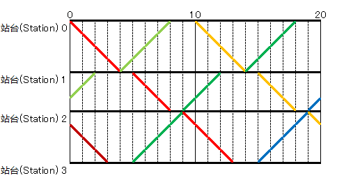

有一条铁路，这条铁路分为 $N$ 段，(将起点站和终点算入) 共有 $N + 1$ 个站台，分别标号为 $0, 1, 2, \cdots, N - 1, N$，其中铁路 $i$ 连接站台 $i - 1$ 和 $i$，长度为 $A_i$。铁路分单向和双向两种。
称方向 $0 \to N$ 为正向，$N \to 0$ 为负向。
你现在需要制定一个火车时间表，满足如下约定：
所有火车要么为正向，要么是负向，且中途不得掉头。
所有火车的速度均为 $1$ 个单位，在站台与站台之间的铁轨上需保持匀速，不能停留。
所有正向火车的发车间隔均为 $K$，且在某一站 $i$ 上的停靠时间只和 $i$ 有关 (所有正向车相同)。
所有负向火车的发车间隔均为 $K$，且在某一站 $i$ 上的停靠时间只和 $i$ 有关 (所有正向车相同)。
对于任意一条单向铁路，不能有一辆正向火车和负向火车在铁路中间 (非站台) 相遇。
如下图就是一个满足条件的火车时间表：
请求出一个时间表，使得正向火车从起点站 ($0$) 到终点站 ($N$) 的时间 (包含停靠时间) 加上负向火车从起点站 ($N$) 到终点站 ($0$) 的时间总和最小。
第一行包含两个正整数 $N, K$ ($N \leq 10^5; K \leq 10^9$)，表示铁路的段数和发车间隔。
接下来 $N$ 行，每行两个正整数 $A_i, B_i$ ($1 \leq A_i \leq 10^9; B_i \in \left\{ 1, 2 \right\}$)，描述铁路 $i$，长度为 $A_i$，$B_i = 1$ 表示铁路描述铁路 $i$ 是单向的，$B_i = 2$ 表示铁路 $i$ 是双向的。
输出一行一个整数，表示正向火车和反向火车单程时间总和的最小可能值。如果不存在满足条件的火车时间表，则输出 $-1$。
不妨设铁路是笔直的，且放在数轴上，于是每个站台 $i$ 都有它自己的坐标 $x_i = A_1 + A_2 + \cdots + A_i$。
考虑对这个火车开来开去的过程进行建模，我们将时间模 $K$ (显然不影响)，将整个问题在 $\hspace{-0.444em} \pmod K$ 的范围内讨论。
首先，考虑问题什么时候会无解：
如果有一段单向铁路，它的长度为 $l > \dfrac K2$，则问题就无解。
因为在 $\hspace{-0.444em} \pmod K$ 意义下两个长度 $> \dfrac K2$ 的区间并相交，而一旦正向列车的行车区间与负向列车的行车区间相交，后果可想而知 就会发生碰撞。
反之，如果所有单向铁路的长度 $l \leq \dfrac K2$，则问题是有解的 —— 一个显然的解就是所有正向列车 (不管在哪一站) 在时刻 $\equiv 0 \pmod K$ 的时候启动，如果现在不在，就等 (至多一个周期)。同理，所有负向列车在时刻 $\equiv \dfrac K2 \pmod K$ 的时候启动。容易证明，这种策略不会发生任何碰撞。
现在考虑如何求最优解。我们先设一些未知数：
设 $p_0$ 表示正向列车的发车时刻，$p_i$ 表示正向列车在站台 $i$ 的停靠时间。
则正向列车在铁路 $i$ 上的行车区间应为 $\left[ p_0 + p_1 + \cdots + p_{i-1} + x_{i-1}, p_0 + p_1 + \cdots + p_{i-1} + x_i \right]$。
若记 $\displaystyle P_n = \sum_{i=0}^n p_i$，则区间 $\mathcal P_i = \left[ P_{i-1} + x_{i-1}, P_{i-1} + x_i \right]$。
对于负向列车，我们将整个过程倒过来 (时光倒流)，设 $- n_0$ 表示负向列车的到达时刻，$n_i$ 表示负向列车在站台 $i$ 的停靠时间。
于是，负向列车在铁路 $i$ 上的行车区间为 $\left[ - n_0 - n_1 - \cdots - n_{i-1} - x_i, - n_0 - n_1 - \cdots - q_{i-1} - x_{i-1} \right]$。
同样，设 $\displaystyle N_n = \sum_{i=0}^n n_i$，则区间 $\mathcal N_i = \left[ - N_{i-1} - x_i, - N_{i-1} - x_{i-1} \right]$。
考虑环上两个区间 $\left[ l_1, r_1 \right], \left[ l_2, r_2 \right]$ 不交的充要条件，应为 $l_1 \in \left[ r_2, l_1 + l_2 - r_1 \right]$ (由于环上没有 $\leq, \geq$ 之说，因此需要用 $\in$ 来描述)。
于是，$P_{i-1} + x_{i-1} \in \left[ - N_{i-1} - x_{i-1}, - N_{i-1} + x_{i-1} - 2 x_i \right] \Leftrightarrow P_{i-1} + N_{i-1} \in \left[ -2 x_{i-1}, -2 x_i \right]$。
综上，我们将列车不 "碰撞" 的条件转化成了一个简单的数学表达式：$P_{i-1} + N_{i-1} \in \left[ -2 x_{i-1}, -2 x_i \right]$ ($i = 1, 2, \cdots, N$)。
考虑计算答案，如果不计停靠时间那么显然是 $2 x_N$，于是我们只需要最小化停靠时间之和，即 $\displaystyle \sum_{i=1}^{N-1} \left( p_i + n_i \right)$。
我们将 $\left[ -2 x_{i-1}, -2 x_i \right]$ 看成一般的区间 $\mathcal R_i$。毕竟由于双向铁路的存在，你也用不到 $\mathcal R_i$ 的什么性质。于是我们考虑一个一般的问题：
有若干个区间 $\mathcal R_1, \mathcal R_2, \cdots, \mathcal R_n$。你现在有一个 $\hspace{-0.444em} \bmod K$ 意义下的数 $x$ (初值任你选)，你需要依次考虑每个 $\mathcal R_i$，你需要合适地移动 $x$ 使得 $x$ 落入 $\mathcal R_i$ 中。注意只能正向移动，且模 $K$。请最小化移动的总距离。
当起点固定时，有一个显然的贪心策略是：能不移则不移，如果非得移 (不在区间内) 则移到区间的左端点。证明略。
显然暴力太慢 (因为你不知道起点)，那么我们考虑 DP，既然不知道起点，我们就换位思考，假设知道了终点，倒退回去，反正问题本身是对称的。
用 $f_{i, x}$ 表示只考虑前 $i$ 个区间，从最优起点移动到已知终点 $x$ 所需要的最小总距离。
则转移是这样的：设 $j$ 为最大的使得 $x \notin \mathcal R_j$ 的 $j$，则整个过程的最后一步一定是：将 $x$ 从 $\mathcal R_j$ 的右端点 (设为 $r_j$) 移回 $x$。
从而，$f_{i, x} = f_{j, r_j} + \left( x ∸ r_j \right)$。这里用 $a ∸ b$ 表示 $a - b$ 取 $\hspace{-0.444em} \pmod K$ 的最小非负剩余。
于是，我们在添加区间的时候，依次问出 $f_{1, r_1}, f_{2, r_2}, \cdots, f_{n, r_n}$，最后停靠的位置一定是某个区间的左端点 (除非答案为 $0$)，因此将所有的左端点代入 $x$ 询问一下即可。
最终剩下的问题是，如何快速找到所需要的 $j$ (使得 $x \notin \mathcal R_j$ 的最大 $j$)。
考虑对于每个 $x \in \left[ 0, K \right)$，记 $pre_x$ 表示这样的 $j$。考虑一次操作对 $pre$ 数组的影响。
不难发现，每一次操作相当于对不在 $\left[ l_i, r_i \right]$ 间的所有数 $e$，令 $pre_e \gets i$。
这可以看成一个 ($l_i > r_i$) 或两个 ($l_i \leq r_i$) 区间赋值。而查询则只需要单点查询。
于是就和 [Codeforces187D]BRT Contract 非常类似了，使用 Chtholly 树解决。
总时间复杂度 $O \left( N \log N \right)$。
#include <bits/stdc++.h>
typedef long long ll;
typedef std::pair <int, int> pr;
typedef std::map <int, int> map;
const int N = 100054;
int n, m, T;
ll x[N], f[N];
pr seg[N];
bool directed[N];
inline void down(ll &x, const ll y) {x > y ? x = y : 0;}
inline int reduced(ll x) {return x %= T, x += x >> 63 & T;}
namespace CTree {
map C;
void init() {C.emplace(0, -1), C.emplace(T, -1);}
map::iterator split(int pos) {
map::iterator it = C.lower_bound(pos), jt = it;
return it->first == pos ? it : C.emplace_hint(it, pos, (--jt)->second);
}
void modify(int l, int r, int v) {
map::iterator it = split(l), jt = split(r);
C.erase(it, jt), C.emplace(l, v);
}
inline int query(int h) {return (--C.upper_bound(h))->second;}
}
int main() {
int i, j, L, R; ll ans = LLONG_MAX;
scanf("%d%d", &n, &T);
for (i = 1; i <= n; ++i)
if (scanf("%lld%d", x + i, &j), directed[i] = j & 1) {
if (2 * x[i] > T) return puts("-1"), 0;
x[i] += x[i - 1], seg[m++] = pr(L = reduced(-2 * x[i - 1]), R = reduced(-2 * x[i]));
} else x[i] += x[i - 1];
CTree::init();
for (i = 0; i < m; ++i)
std::tie(L, R) = seg[i], j = CTree::query(R),
f[i] = (~j ? f[j] + reduced(R - seg[j].second) : 0),
L <= R ? (CTree::modify(0, L, i), CTree::modify(R + 1, T, i)) : (CTree::modify(R + 1, L, i));
for (const pr &e : CTree::C) {
if (e.first >= T) continue;
if (!~e.second) {ans = 0; break;}
down(ans, f[e.second] + reduced(e.first - seg[e.second].second));
}
printf("%lld\n", ans + 2 * x[n]);
return 0;
}
坑1：注意 Chtholly 树的写法，不要出现 RE 等。
坑2：虽然双向铁路可以跳过不处理，但是在计算站台坐标的时候不要忘记考虑它们的贡献。